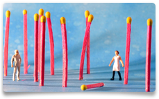

"Een joint
kan dat kwaad?"

Hier vind je meer info rond het thema drugs, over verslaving en over hoe De Sleutel hiermee omgaat. Lees hierna welke risico's je loopt. Test je kennis (zie lager).
"Ik wil stoppen
met gebruiken"

Maak hier kennis met ons aanbod. Wil je op gesprek komen? Twijfel je over een opname? Lees meer over onze hulp (ook voor minderjarigen, dubbel diagnose of activering naar werk). Verslaafd? Doe hieronder de test.
"Hoe kan ik
mijn kind helpen?"

Op zoek naar tips voor familie en vrienden? Info over zelfhulpgroepen? Hier bundelen we info op maat van de omgeving van de gebruiker. Lees hier ook hoe een behandeling bij ons verloopt.
"Evidence based
werken in De Sleutel?"
Hier vind je info op maat van wie beroepshalve met het thema drugs bezig is. Maak kennis met ons aanbod voor leerkrachten. Wat is evidence based werken? Welke drugspreventie is effectief?